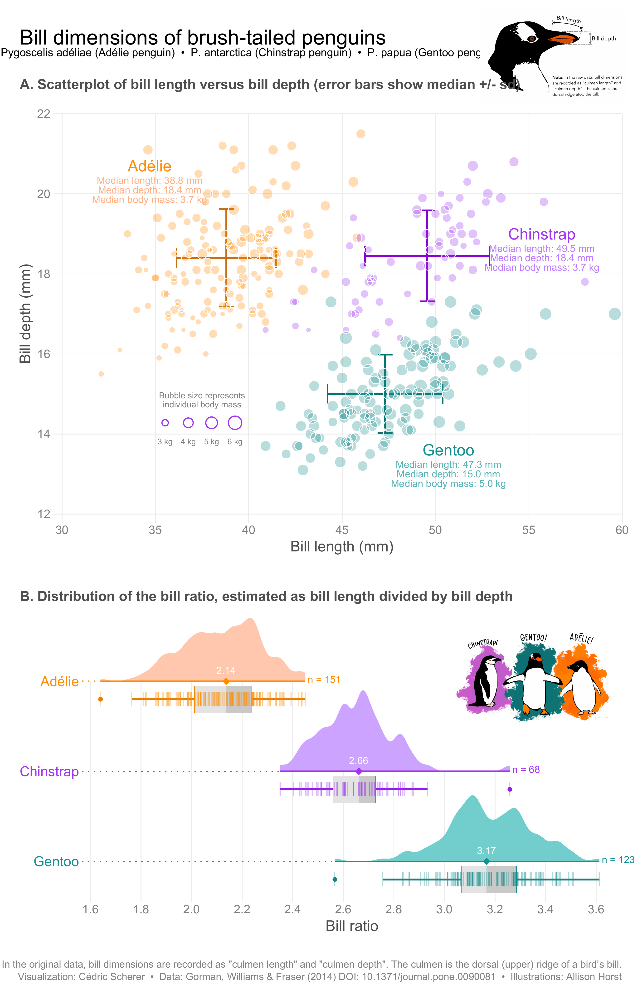

This week’s #TidyTuesday subject is a study of 342 observations of Antarctic penguins on the Palmer Archipelago.
Our goal here is first to predict the sex feature missing from several of the penguins in the dataset using a classification model, driven by what is known in other observations in the dataset.
Then, we will take a closer look at an expert data visualization crafted by Cedric Scherer.
And finally, we will close with a discussion of several methods of assessing variable importance.
Read more about how this dataset came to be at this post on the RStudio Education blog.
If you try building a classification model for species, you will find an almost perfect fit, because these kinds of observations are actually what distinguish different species. Sex, on the other hand, is a little messier. 9 are missing from the dataset.
penguins %>%
count(sex) ## # A tibble: 3 x 2
## sex n
## <fct> <int>
## 1 female 165
## 2 male 168
## 3 <NA> 9penguins %>%
ggplot(aes(flipper_length_mm, bill_length_mm, size = body_mass_g)) +
geom_point(aes(color = sex), alpha = 0.5, show.legend = FALSE) +
geom_text(aes(label = if_else(is.na(sex),"X","")), size = 12)+
viridis::scale_color_viridis(discrete = TRUE, direction = -1, option = "D", na.value = 'black')+
facet_wrap(~species) +
theme_bw()+
theme(plot.title.position = "plot")+
labs(title = "Palmer Penguins with those Missing Gender as X")
It looks like female penguins are smaller with different bills, but let’s get ready for modeling to find out more! We will not use the island or year information in our model. And for modeling, we will include all of the observations that have the sex noted.
penguins_df <- penguins %>%
filter(!is.na(sex)) %>%
select(-year, -island)We start here by loading the tidymodels metapackage, and splitting our data into training and testing sets. In this case, the training set is 250 observations, and the testing set held in reserve is 83 observations.
library(tidymodels)## -- Attaching packages ------------------------------ tidymodels 0.1.1 --## v broom 0.7.0 v recipes 0.1.13
## v dials 0.0.8 v rsample 0.0.7
## v infer 0.5.3 v tune 0.1.1
## v modeldata 0.0.2 v workflows 0.1.2
## v parsnip 0.1.2 v yardstick 0.0.7## -- Conflicts --------------------------------- tidymodels_conflicts() --
## x scales::discard() masks purrr::discard()
## x dplyr::filter() masks stats::filter()
## x recipes::fixed() masks stringr::fixed()
## x dplyr::lag() masks stats::lag()
## x yardstick::spec() masks readr::spec()
## x recipes::step() masks stats::step()penguin_split <- initial_split(penguins_df, strata = sex)
penguin_train <- training(penguin_split)
penguin_test <- testing(penguin_split)Next, let’s create bootstrap resamples of the training data, to evaluate training models.
penguin_boot <- bootstraps(penguin_train)
penguin_boot## # Bootstrap sampling
## # A tibble: 25 x 2
## splits id
## <list> <chr>
## 1 <split [250/91]> Bootstrap01
## 2 <split [250/89]> Bootstrap02
## 3 <split [250/96]> Bootstrap03
## 4 <split [250/88]> Bootstrap04
## 5 <split [250/82]> Bootstrap05
## 6 <split [250/99]> Bootstrap06
## 7 <split [250/98]> Bootstrap07
## 8 <split [250/95]> Bootstrap08
## 9 <split [250/89]> Bootstrap09
## 10 <split [250/84]> Bootstrap10
## # ... with 15 more rowsLet’s compare two different modeling techniques, a logistic regression model and a random forest model. Both are computationally simple and work well for tabular data. We start by creating the model specifications.
glm_spec <- logistic_reg() %>%
set_engine("glm")
glm_spec## Logistic Regression Model Specification (classification)
##
## Computational engine: glmrf_spec <- rand_forest() %>%
set_mode("classification") %>%
set_engine("ranger")
rf_spec## Random Forest Model Specification (classification)
##
## Computational engine: rangerNext let’s start putting together a tidymodelsworkflow(), a helper object to help manage modeling pipelines with pieces that fit together like Lego blocks. Notice that there is no model yet.
penguin_wf <- workflow() %>%
add_formula(sex ~ .)
penguin_wf## == Workflow ============================================================
## Preprocessor: Formula
## Model: None
##
## -- Preprocessor --------------------------------------------------------
## sex ~ .Now we can add a model, and the fit to each of the resamples. First, we can fit the logistic regression model.
glm_rs <- penguin_wf %>%
add_model(glm_spec) %>%
fit_resamples(
resamples = penguin_boot,
control = control_resamples(save_pred = TRUE)
)
glm_rs## # Resampling results
## # Bootstrap sampling
## # A tibble: 25 x 5
## splits id .metrics .notes .predictions
## <list> <chr> <list> <list> <list>
## 1 <split [250/91]> Bootstrap01 <tibble [2 x 3~ <tibble [0 x 1~ <tibble [91 x 5~
## 2 <split [250/89]> Bootstrap02 <tibble [2 x 3~ <tibble [0 x 1~ <tibble [89 x 5~
## 3 <split [250/96]> Bootstrap03 <tibble [2 x 3~ <tibble [0 x 1~ <tibble [96 x 5~
## 4 <split [250/88]> Bootstrap04 <tibble [2 x 3~ <tibble [0 x 1~ <tibble [88 x 5~
## 5 <split [250/82]> Bootstrap05 <tibble [2 x 3~ <tibble [0 x 1~ <tibble [82 x 5~
## 6 <split [250/99]> Bootstrap06 <tibble [2 x 3~ <tibble [0 x 1~ <tibble [99 x 5~
## 7 <split [250/98]> Bootstrap07 <tibble [2 x 3~ <tibble [0 x 1~ <tibble [98 x 5~
## 8 <split [250/95]> Bootstrap08 <tibble [2 x 3~ <tibble [0 x 1~ <tibble [95 x 5~
## 9 <split [250/89]> Bootstrap09 <tibble [2 x 3~ <tibble [0 x 1~ <tibble [89 x 5~
## 10 <split [250/84]> Bootstrap10 <tibble [2 x 3~ <tibble [0 x 1~ <tibble [84 x 5~
## # ... with 15 more rowsSecond, we can fit the random forest model.
rf_rs <- penguin_wf %>%
add_model(rf_spec) %>%
fit_resamples(
resamples = penguin_boot,
control = control_resamples(save_pred = TRUE)
)
rf_rs## # Resampling results
## # Bootstrap sampling
## # A tibble: 25 x 5
## splits id .metrics .notes .predictions
## <list> <chr> <list> <list> <list>
## 1 <split [250/91]> Bootstrap01 <tibble [2 x 3~ <tibble [0 x 1~ <tibble [91 x 5~
## 2 <split [250/89]> Bootstrap02 <tibble [2 x 3~ <tibble [0 x 1~ <tibble [89 x 5~
## 3 <split [250/96]> Bootstrap03 <tibble [2 x 3~ <tibble [0 x 1~ <tibble [96 x 5~
## 4 <split [250/88]> Bootstrap04 <tibble [2 x 3~ <tibble [0 x 1~ <tibble [88 x 5~
## 5 <split [250/82]> Bootstrap05 <tibble [2 x 3~ <tibble [0 x 1~ <tibble [82 x 5~
## 6 <split [250/99]> Bootstrap06 <tibble [2 x 3~ <tibble [0 x 1~ <tibble [99 x 5~
## 7 <split [250/98]> Bootstrap07 <tibble [2 x 3~ <tibble [0 x 1~ <tibble [98 x 5~
## 8 <split [250/95]> Bootstrap08 <tibble [2 x 3~ <tibble [0 x 1~ <tibble [95 x 5~
## 9 <split [250/89]> Bootstrap09 <tibble [2 x 3~ <tibble [0 x 1~ <tibble [89 x 5~
## 10 <split [250/84]> Bootstrap10 <tibble [2 x 3~ <tibble [0 x 1~ <tibble [84 x 5~
## # ... with 15 more rowsWe have fit each of two candidate models to our resampled training set.
Now let’s check out how we did. First, the random forest:
collect_metrics(rf_rs)## # A tibble: 2 x 5
## .metric .estimator mean n std_err
## <chr> <chr> <dbl> <int> <dbl>
## 1 accuracy binary 0.890 25 0.00638
## 2 roc_auc binary 0.955 25 0.00259Pretty nice! The function collect_metrics() extracts and formats the .metrics column from resampling results like the ones we have here. Next, the glm:
collect_metrics(glm_rs)## # A tibble: 2 x 5
## .metric .estimator mean n std_err
## <chr> <chr> <dbl> <int> <dbl>
## 1 accuracy binary 0.909 25 0.00546
## 2 roc_auc binary 0.968 25 0.00273So… also great! If I am in a situation where a more complex model like a random forest performs the same as a simpler model like logistic regression, then I will choose the simpler model. Let’s dig deeper into how it is doing. For example, how is the glm model predicting the two classes?
glm_rs %>%
conf_mat_resampled()## # A tibble: 4 x 3
## Prediction Truth Freq
## <fct> <fct> <dbl>
## 1 female female 41.5
## 2 female male 4.2
## 3 male female 4.32
## 4 male male 42.8About the same, which is good. We can also make an ROC curve for the glm model.
glm_rs %>%
collect_predictions() %>%
group_by(id) %>%
roc_curve(sex, .pred_female) %>%
ggplot(aes(1 - specificity, sensitivity, color = id)) +
geom_abline(lty = 2, color = "gray80", size = 1.5) +
geom_path(show.legend = FALSE, alpha = 0.6, size = 1.2) +
coord_equal()+
theme(plot.title.position = "plot")+
labs(title = "GLM Model Receiver Operating Characteristic Curve")
This ROC curve is more jagged than others you may have seen because the dataset is small.
It is finally time for us to return to the testing set. Notice that we have not used the testing set yet during this whole analysis; the testing set is precious and can only be used to estimate performance on new data. Let’s fit one more time to the training data and evaluate on the testing data using the function last_fit().
penguin_final <- penguin_wf %>%
add_model(glm_spec) %>%
last_fit(penguin_split)
penguin_final## # Resampling results
## # Monte Carlo cross-validation (0.75/0.25) with 1 resamples
## # A tibble: 1 x 6
## splits id .metrics .notes .predictions .workflow
## <list> <chr> <list> <list> <list> <list>
## 1 <split [250~ train/test ~ <tibble [2 x~ <tibble [0 ~ <tibble [83 x ~ <workflo~The metrics and predictions here are on the testing data.
collect_metrics(penguin_final)## # A tibble: 2 x 3
## .metric .estimator .estimate
## <chr> <chr> <dbl>
## 1 accuracy binary 0.928
## 2 roc_auc binary 0.981collect_predictions(penguin_final) %>%
conf_mat(sex, .pred_class)## Truth
## Prediction female male
## female 37 2
## male 4 40The coefficients (which we can get out using tidy()) have been estimated using the training data. If we use exponentiate = TRUE, we have odds ratios.
penguin_final$.workflow[[1]] %>%
tidy(exponentiate = TRUE) ## # A tibble: 7 x 5
## term estimate std.error statistic p.value
## <chr> <dbl> <dbl> <dbl> <dbl>
## 1 (Intercept) 2.05e-34 13.5 -5.76 0.00000000840
## 2 speciesChinstrap 1.95e- 3 1.68 -3.72 0.000202
## 3 speciesGentoo 7.55e- 4 2.79 -2.58 0.00995
## 4 bill_length_mm 1.74e+ 0 0.138 4.02 0.0000591
## 5 bill_depth_mm 5.41e+ 0 0.386 4.37 0.0000125
## 6 flipper_length_mm 1.03e+ 0 0.0528 0.545 0.586
## 7 body_mass_g 1.01e+ 0 0.00119 4.52 0.00000614The largest odds ratio is for bill depth, with the second largest for bill length. An increase of 1 mm in bill depth corresponds to almost 4x higher odds of being male. The characteristics of a penguin’s bill must be associated with their sex.
We don’t have strong evidence that flipper length is different between male and female penguins, controlling for the other measures; maybe we should explore that by changing that first plot!
Let’s make our predictions:
.pred_class<-(penguin_wf %>%
add_model(glm_spec) %>%
fit(penguin_train) %>%
predict(new_data = penguins))
penguins<-bind_cols(penguins, .pred_class)
penguins <- penguins %>%
mutate(sex = if_else(is.na(sex),
.pred_class,
sex)) %>%
select(-.pred_class)And a new plot along the most important penguin features:
penguins %>%
ggplot(aes(bill_depth_mm, bill_length_mm, size = body_mass_g)) +
geom_point(aes(color = sex), alpha = 0.5, show.legend = TRUE) +
geom_text(aes(label = if_else(is.na(sex),"X","")), size = 12)+
viridis::scale_color_viridis(discrete = TRUE, direction = -1, option = "D", na.value = 'black')+
facet_wrap(~species) +
theme_bw()+
theme(plot.title.position = "plot",
legend.position = "top")+
labs(title = "Palmer Penguins",
size = "Body Mass",
x = "Bill Depth in mm",
y = "Bill Length in mm")
Cedric Scherer crafts stunning visualizations weekly for #TidyTuesday and posts them publicly. He has identified an engineered feature, called bill ratio, that provides very good separation between the three species. Note the use of annotations and the raincloud elements below the density plots.

One thing that keeps popping up in machine learning work is the need to explain the models and their components. There are a couple of ways to go about explaining model features, and probably the most common approach is to use feature importance scores. Unfortunately, computing importance scores isn’t as straightforward as one might hope, with several methodologies. In this post, let’s explore the question “How similar are the feature importance scores calculated using different methodologies?” It’s important to know if the different methods will lead to drastically different results. If so, then the choice of method is a source of bias in model interpretation.
This post isn’t intended to be a deep-dive into model interpretability, but some concepts should be highlighted before attempting to answer the question. Feature importance can be categorized as either being “model-specific” or “model-agnostic”. Both depend upon some kind of loss function, e.g. root mean squared error (RMSE), classification error, etc. The loss function for a model-specific approach will generally be “fixed” by the software and package that are used, while model-agnostic approaches tend to give the user flexibility in choosing a loss function. Finally, within model-agnostic approaches, there are different methods, e.g. permutation and SHAP (Shapley Additive Explanations).
So, to summarize, variable importance methodologies can be broken down in several ways:
I’m going to attempt to address (1) and (3), leaving (2) out because (a) the feature rankings won’t differ too much when using different loss functions and (b) for the sake of simplicity, we will keep the post short.
I also want to evaluate how variable importance scores differ across more than one of each of the following:
While evaluating the sensitivity of variable importance scores to different methodologies is the focus of this analysis, it’s important to test how the findings hold up when (1) varying model types, (2) varying target variables, and (3) varying the data itself. This should help us highlight the bias in the results due to choice of model type and type of target variable. Put another way, it should help us quantify the robustness the conclusions that are drawn. If we find that the scores are similar under variation, then we can be more confident that the findings can be generalized.
Additionally, I’m going to use more than one package for computing variable importance scores. As with varying model types, outcome variables, and data, the purpose is to highlight and quantify possible bias due to choices in this analysis—in this case, the choice of package. Are the results of a permutation-based variable importance calculation the same when using different packages?
Specifically, I’ll be using the vip and DALEX packages. The vip package is capable of doing both types of calculations, model-specific and model-agnostic for a variety of model types. DALEX specializes in model-agnostic model interpretability and can do a lot more than just variable importance calculations.
For data, I’m going to be using the new palmerpenguins and the famous mpg.
For model types, I’m going to use:
stats::lm() and stats::glm() respectivelyglmnet packageranger packagexgboost packageWith glmnet::glmnet(), I’m actually not going to use a penalty, so it should return the same results as lm()/glm(). For ranger and xgboost, I’m going to be using defaults for all parameters.
vip’s model-specific scores with (vip::vip(method = 'model'))vip’s permutation-based scores (with vip::vip(method = 'permute'))vip’s SHAP-based values (with vip::vip(method = ‘shap’)1)DALEX’s permutation-based scores (with DALEX::variable_importance())Note that the model-specific vs. model-agnostic concern is addressed in comparing method (1) vs. methods (2)-(4). I’ll be consistent with the loss function in variable importance computations for the model-agnostic methods–minimization of RMSE for a continuous target variable and sum of squared errors (SSE) for a discrete target variable.
mpg_modified <- mpg %>% mutate(
grp = case_when(
class %in% c('2seater', 'compact', 'subcompact', 'midsize') ~ '1. Small',
TRUE ~ '2. Big'),
trans = case_when(
stringr::str_detect(trans, "auto")~ "auto",
TRUE ~ "manual"
)
) %>%
select(-class, -model, -manufacturer, -fl)
.seed <- 42L
.engines_valid <- c('glm', 'glmnet', 'xgboost', 'ranger')
engines_named <- .engines_valid %>% setNames(., .)
.modes_valid <- c('regression', 'classification')
source(paste0(here::here("content","post","VariableImportance","code", "functions.R")))
compare_and_rank_vip_q <- quietly(compare_and_rank_vip)The following handful of plots illustrate normalized variable importance scores and ranks derived from the scores by data set and type of target variable.
First up is the results for the penguins data set with a continuous target variable.
penguins_c_rnks <-
engines_named %>%
map_dfr(
~compare_and_rank_vip_q(
penguins ,
col_y = 'body_mass_g',
engine = .x
) %>%
pluck('result'),
.id = 'engine'
)
lab_title <- 'Variable Importance Ranking'
lab_subtitle_penguins_c <- '<span style = "color:#4E79A7"><b>Continuous</b></span> Target Variable for Model Prediction of <span style = "color:#E15759"><b>penguins</b></span> Data'
viz_penguins_c_rnks <-
penguins_c_rnks %>%
plot_rnks(option = 'A') +
labs(
title = lab_title,
subtitle = lab_subtitle_penguins_c
)
viz_penguins_c_rnks
One thing really stand out to me: the model-specific scores differ relatively strongly from the rest of the scores given a specific model type. (See the numbers in the parentheses in the first column in each facet labeled vip_model compared to those in the other columns of each facet. For example, the model-specific variable importance score for the species_Gentoo feature for the glm model type is 21%, while the same score for the SHAP variable importance method (vip_shap) is 39%. To be honest, this is not too surprising. The model-specific methods are exactly that—specific to the model type—which suggests that they may strongly dissimilar to the model-agnostic approaches. Nonetheless, despite the scores themselves having some notable variance, the top 3 rankings derived from the scores are relatively similar across a given model type and, arguably, across all model types.
As a second observation, there is some disagreement between the glm and glmnet model types and the ranger and xgboost model types about which feature is the most important: the former two identify species_Gentoo as being the most important, while the latter two prioritize flipper_length_mm.
Thirdly–and lastly for this plot—it’s nice to see that the vip_permute and dalex methods produce similar results for each model type, with the exception of glmnet. Notably, I built the explain() function for glmnet myself since the DALEX package does not export one, so that is probably the reason for the discrepancy.
Now let’s look at the the results when predicting a discrete target variable with the same data set.
penguins_d_rnks <-
engines_named %>%
map_dfr(
~compare_and_rank_vip_q(
penguins,
col_y = 'sex',
engine = .x,
) %>%
pluck('result'),
.id = 'engine'
)
lab_subtitle_penguins_d <- lab_subtitle_penguins_c %>%
str_replace('^.*\\sTarget', '<span style "color:#F28E2B;"><b>Discrete</b></span> Target')
viz_penguins_d_rnks <-
penguins_d_rnks %>%
plot_rnks(option = 'A') +
labs(
title = lab_title,
subtitle = lab_subtitle_penguins_d
)
viz_penguins_d_rnks
Compared to the results for a continuous target variable, we see greater variation across the model types. Additionally, we observe that the scores for our two permutation implementations— vip_permute and dalex—are very different. This might something to do with how I’ve chosen to normalize scores (i.e. using absolute value to convert negative scores to positive ones prior to 0-1 normalization) or something I’ve over-looked that is specific to classification settings. If something that can be attributed to me (and not the underlying methods) is really the source of discrepancies, then we should be less concerned with the variation in scores and ranks since it seems most strongly associated with the vip_permute-dalex differences.
Before we can begin to generalize any deductions (possibly biased by our single data set), let’s take a look at the results for the second data set, mpg. First is the results for the continuous target variable.
mpg_c_rnks <-
engines_named %>%
map_dfr(
~compare_and_rank_vip_q(
mpg_modified %>% select(-grp),
col_y = 'displ',
engine = .x
) %>%
pluck('result'),
.id = 'engine'
)
lab_subtitle_mpg_c <- lab_subtitle_penguins_c %>% str_replace('of.*Data', 'of <span style = "color:#B07AA1"><b>mpg</b></span> Data')
viz_mpg_c_rnks <-
mpg_c_rnks %>%
plot_rnks(option = 'A') +
labs(
title = lab_title,
subtitle = lab_subtitle_mpg_c
)
viz_mpg_c_rnks There is consensus on what the most important variable is—cyl—but beyond that, the results are somewhat varied across the board. One might argue that there is going to be lack of agreement among methods (and model types), it’s preferable that the discrepancies occur among lower ranks, as seen here. On the other hand, we’d surely like to see more consensus among variables ranked among the top half or so.
There is consensus on what the most important variable is—cyl—but beyond that, the results are somewhat varied across the board. One might argue that there is going to be lack of agreement among methods (and model types), it’s preferable that the discrepancies occur among lower ranks, as seen here. On the other hand, we’d surely like to see more consensus among variables ranked among the top half or so.
And now for the results when ranking with models targeting a discrete variable.
mpg_d_rnks <-
engines_named %>%
map_dfr(
~compare_and_rank_vip_q(
mpg_modified,
col_y = 'grp',
engine = .x,
) %>%
pluck('result'),
.id = 'engine'
)
lab_subtitle_mpg_d <- lab_subtitle_mpg_c %>% str_replace('^.*\\sTarget', '<span style = "color:#F28E2B;"><b>Discrete</b></span> Target')
viz_mpg_d_rnks <-
mpg_d_rnks %>%
plot_rnks(option = 'A') +
labs(
title = lab_title,
subtitle = lab_subtitle_mpg_d
)
viz_mpg_d_rnks
There is some pretty strong variation in the ranger results. Also, there are discrepancies between the two permutation methods (vip_permute and dalex), which we also noted in the discrete results for diamonds as well. Again, the issue may be due to something in the normalization chosen. Aside from these, the results within each model type are pretty coherent.
Even without performing any kind of similarity evaluation, we can argue that, in general, the rankings computed by the different methods are relatively similar across the two data sets (penguins and mpg) and the two types of target variables (continuous and discrete). But why stop there? After all, we can quantify the similarities between ranks.
cor_by_set_engine <-
list(
penguins_c = penguins_c_rnks,
penguins_d = penguins_d_rnks,
mpg_c = mpg_c_rnks,
mpg_d = mpg_d_rnks
) %>%
map_dfr(bind_rows, .id = 'set') %>%
group_by(set, engine) %>%
nest() %>%
ungroup() %>%
mutate(
data =
map(data, ~widyr::pairwise_cor(.x, item = src, feature = var, value = rnk))
) %>%
unnest(data) %>%
rename(cor = correlation)
cor_by_engine <-
cor_by_set_engine %>%
group_by(engine, item1, item2) %>%
summarize_at(vars(cor), mean) %>%
ungroup()
viz_cor_by_engine <-
cor_by_engine %>%
prettify_engine_col() %>%
mutate_at(vars(item1, item2), factor_src) %>%
mutate(lab = scales::percent(cor, accuracy = 1, width = 3, justify = 'right')) %>%
filter(item1 < item2) %>%
ggplot() +
aes(x = item1, y = item2) +
geom_tile(aes(fill = cor), alpha = 0.5, show.legend = FALSE) +
geom_text(aes(label = lab)) +
scale_fill_viridis_c(option = 'A', na.value = 'white') +
theme_minimal(base_family = '') +
facet_wrap(~engine) +
theme(
plot.title.position = 'plot',
panel.grid.major = element_blank(),
panel.grid.minor = element_blank(),
plot.title = element_text(face = 'bold'),
plot.subtitle = ggtext::element_markdown(),
) +
labs(
title = 'Variable Importance Rank Pairwise Correlations',
subtitle = 'Averaged Over <span style = "color:#E15759"><b>diamonds</b></span> and <span style = "color:#B07AA1"><b>mpg</b></span> Data and Over <span style = "color:#4E79A7"><b>Continuous</b></span> and <span style = "color:#F28E2B;"><b>Discrete</b></span> Target Variables',
x = NULL,
y = NULL
)
viz_cor_by_engine
The plot above shows the pairwise correlations among the variable importance ranks computed for each package-function combo, averaged over the two data sets and over the models for the two types of target variables—continuous and discrete. While nothing immediately jumps out from this plot, I think the most notable thing is that the ranger and xgboost scores seem to vary the most across the different variable importance methodologies, bottoming out at ~47% for the correlation between the dalex and model-specific (vip_model) methodologies. On the other hand, glm seems to have the most “agreement” and least variance in its scores.
Overall, we might say that rankings of variable importance based on normalized variable importance scores in this analysis showed that differences will arise when evaluating different methodologies, but the differences may not be strong enough to change any deductions that one might draw. Of course, this will depend on the domain.
Do not go so far as to say that these insights can be generalized. Among other things, I would need to evaluate a much larger variety of data sets. However, it’s good to be conscious how much the results can vary. It’s ultimately up to the user whether the differences are significant.
Inspired by Tony ElHabr’s post here